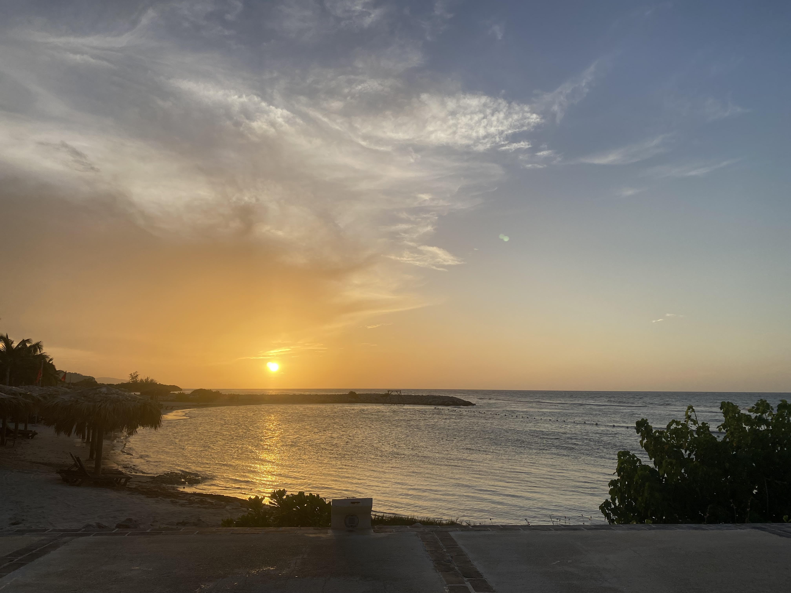
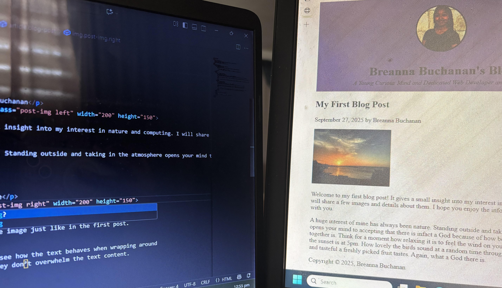

My First Blog Post
September 27, 2025 by Breanna Buchanan

Welcome to my first blog post! It gives a small insight into my interest in nature and computing. I will share a few images and details about them. I hope you enjoy the information I have to share with you.
A huge interest of mine has always been nature. Standing outside and taking in the atmosphere opens your mind to accepting that there is infact a God because of how beautiful everything together is. Think for a moment how relaxing it is to feel the wind on your skin. How breathtaking the sunset is at 5pm. How lovely the birds sound at a random time throughout the day. How sweet and tasteful a freshly picked fruit tastes. Again, what a God there is.
Why Computing?
September 27, 2025 by Breanna Buchanan

Computing has also become a huge interest. "Why?", you might ask. Well honestly, it is still new to me but I've discovered how fun it is in learning and creating. The world of computing is interesting is wide and there is a wealth of information it provides when you are willing to learn. The image represents the creation of the webpage and it was fun to do so. I look forward to the many other projects in web development and design that I have ahead.
If and when you find something you are interested in, I believe you should give it your all in learning about it. Knowledge never expires even if your interest changes afterawhile. Invest in yourself and become the best in what interest you.